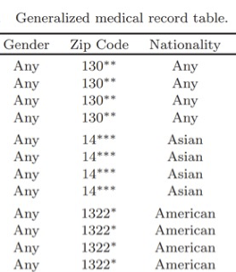

3. K-anonymity#
import pandas as pd
import numpy as np
health=pd.read_csv('health.csv')[['Name', 'SSN', 'Marital status', 'Sex', 'DOB', 'Zip', 'Ethnicity', 'Problem' ]]
voter=pd.read_csv('voter.csv')[['Name', 'Address', 'Sex', 'DOB', 'Zip' ]]
health.rename({'Ethnicity': 'Race'}, axis=1)
# health.Zip=health.Zip.astype(str)
# health[list(set(health.columns).difference(set(['Unnamed: 0'])))].to_csv('health.csv', index=False)
# voter[list(set(voter.columns).difference(set(['Unnamed: 0'])))].to_csv('voter.csv', index=False)
| Name | SSN | Marital status | Sex | DOB | Zip | Race | Problem | |
|---|---|---|---|---|---|---|---|---|
| 0 | -- | -- | Divorced | Male | 1995-12-21 | 2139 | Asian | Hypertension |
| 1 | -- | -- | Divorced | Female | 1996-06-27 | 2139 | Asian | Obesity |
| 2 | -- | -- | Married | Female | 1996-08-24 | 2139 | Asian | Chest pain |
| 3 | -- | -- | Married | Female | 1996-09-22 | 2139 | Asian | Obesity |
| 4 | -- | -- | Married | Male | 1995-08-11 | 2148 | Black | Hypertension |
| 5 | -- | -- | Married | Male | 1995-09-20 | 2138 | Black | Shortness of breath |
| 6 | -- | -- | Married | Female | 1996-08-07 | 2141 | Black | Shortness of breath |
| 7 | -- | -- | Married | Male | 1995-07-23 | 2141 | Black | Obesity |
| 8 | -- | -- | Single | Female | 1996-04-24 | 2138 | White | Chest pain |
| 9 | -- | -- | Single | Male | 1995-02-18 | 2138 | White | Obesity |
| 10 | -- | -- | Widow | Female | 1996-09-16 | 2142 | White | Shortness of breath |
3.1. Linking attack#
Imagine that we have a public health dataset with the following attributes:
health.head(10)
| Name | SSN | Marital status | Sex | DOB | Zip | Ethnicity | Problem | |
|---|---|---|---|---|---|---|---|---|
| 0 | -- | -- | Divorced | Male | 1995-12-21 | 2139 | Asian | Hypertension |
| 1 | -- | -- | Divorced | Female | 1996-06-27 | 2139 | Asian | Obesity |
| 2 | -- | -- | Married | Female | 1996-08-24 | 2139 | Asian | Chest pain |
| 3 | -- | -- | Married | Female | 1996-09-22 | 2139 | Asian | Obesity |
| 4 | -- | -- | Married | Male | 1995-08-11 | 2148 | Black | Hypertension |
| 5 | -- | -- | Married | Male | 1995-09-20 | 2138 | Black | Shortness of breath |
| 6 | -- | -- | Married | Female | 1996-08-07 | 2141 | Black | Shortness of breath |
| 7 | -- | -- | Married | Male | 1995-07-23 | 2141 | Black | Obesity |
| 8 | -- | -- | Single | Female | 1996-04-24 | 2138 | White | Chest pain |
| 9 | -- | -- | Single | Male | 1995-02-18 | 2138 | White | Obesity |
The dataset has private or sensitive information, such as people’s marital status or their medical problems. If this dataset is made public, people whose records belong here can face privacy issues such as social embarasments or an increased insurance premium because of their health condition. Usually, if published, such datasets are redacted by, e.g., removing, masking, or encrypting (direct) identifiers. Note that the identifying columns in the datset– Full name and SSN –have been removed. It only this dataset is published, then there is no risk of leaking people’s medical condition since this information cannot be linked to any person. We would say that this datset has been pseudonymized.
Unfortunately, other sources of information can be used to deanonymize these records. Consider a voter registration database with the following attributes:
voter.head(10)
| Name | Address | Sex | DOB | Zip | |
|---|---|---|---|---|---|
| 0 | Peter Sparks | PSC 4583, Box 5237 APO AP 43391 | Male | 1995-12-21 | 2139 |
| 1 | Lauren Edwards | 0488 Jeffrey Parkways Suite 732 Brianshire, IN... | Female | 1996-06-27 | 2139 |
| 2 | Angela Gibson | 31809 Olson Wells Apt. 580 Mullinsshire, TN 22229 | Female | 1996-08-24 | 2139 |
| 3 | Krista Weaver | 4387 Garcia Camp Adamside, TX 25896 | Female | 1996-09-22 | 2139 |
| 4 | David Davis | 6179 Amber Square Suite 057 North Patriciaton,... | Male | 1995-08-11 | 2148 |
| 5 | Rachel Hernandez | 556 Flores Port Apt. 367 West Kylie, DE 02268 | Male | 1995-09-20 | 2138 |
| 6 | Gina Donaldson | 20516 Castro Cliff Parkerside, AK 66539 | Female | 1996-08-07 | 2141 |
| 7 | Crystal Mcconnell | 67874 Matthews Hills\nEatonmouth, IN 54155 | Male | 1995-07-23 | 2141 |
| 8 | Samantha Jackson | 42804 Miller Hill\nJohnstad, RI 94607 | Female | 1996-04-24 | 2138 |
| 9 | Kevin Davis | 5480 Mitchell Extensions Apt. 941 Hillbury, CT... | Male | 1995-02-18 | 2138 |
By joining the two data tables based on the common columns (that is, DOB, Sex, and Zip), we can figure out the names (and addresses) of people in the first database, and then we can learn what medical problem each of them had! A pretty severe privacy violation, since one can locate the person with name and address, and know their medical condition!
pd.merge(health, voter, on=['DOB', 'Sex', 'Zip'])[['Name_y', 'Sex', 'Marital status', 'Ethnicity', 'Address','Zip', 'Problem']]
| Name_y | Sex | Marital status | Ethnicity | Address | Zip | Problem | |
|---|---|---|---|---|---|---|---|
| 0 | Peter Sparks | Male | Divorced | Asian | PSC 4583, Box 5237 APO AP 43391 | 2139 | Hypertension |
| 1 | Lauren Edwards | Female | Divorced | Asian | 0488 Jeffrey Parkways Suite 732 Brianshire, IN... | 2139 | Obesity |
| 2 | Angela Gibson | Female | Married | Asian | 31809 Olson Wells Apt. 580 Mullinsshire, TN 22229 | 2139 | Chest pain |
| 3 | David Davis | Male | Married | Black | 6179 Amber Square Suite 057 North Patriciaton,... | 2148 | Hypertension |
| 4 | Rachel Hernandez | Male | Married | Black | 556 Flores Port Apt. 367 West Kylie, DE 02268 | 2138 | Shortness of breath |
| 5 | Gina Donaldson | Female | Married | Black | 20516 Castro Cliff Parkerside, AK 66539 | 2141 | Shortness of breath |
| 6 | Crystal Mcconnell | Male | Married | Black | 67874 Matthews Hills\nEatonmouth, IN 54155 | 2141 | Obesity |
| 7 | Samantha Jackson | Female | Single | White | 42804 Miller Hill\nJohnstad, RI 94607 | 2138 | Chest pain |
| 8 | Kevin Davis | Male | Single | White | 5480 Mitchell Extensions Apt. 941 Hillbury, CT... | 2138 | Obesity |
| 9 | Joana Wood | Female | Widow | White | 8904 Corey Fort Apt. 957 Franklinchester, SC 2... | 2142 | Shortness of breath |
The columns on which we performed the merge operation, i.e., the columns that are, in combination, unique to each person, are called quasi-identifiers, since they combinedly can identify a person. Note that none of these columns can individually identify a person because they are not unique to a person. Compare that to explicit or direct identifiers, such as full name and SSN, that can individually identify a person. Likewise, you mobile phone has a uniqune ID (actually multiple) that is likely get harvested by most applications to track you cross-apps and over time.
Let’s make these (and other) definitions formal.
3.1.1. Definitions#
Attributes (Columns): Let \(B(A_1,…,A_n)\) be a table with a finite number of tuples (or rows). The finite set of attributes of \(B\) are \(\{A_1,…,A_n\}\) []. For the Health table shown above, the attributes are {Name, SSN, Maritalstatus, Sex, DOB, Zip, Ethnicity, Problem}. Each attribute, also represents a domain of values, from where each of the tuples take value. For example, Sex may represent the domain {Male, Female, non-binary, etc.} and each row takes one value from this domain set. For our case, we assume that each row contains data about one person (and a person appears exactly once).
Quasi-identifiers: Given a population of entities \(U\), an entity-specific table \(T(A_1,\dots,A_n)\), \(f_c: U\rightarrow T\), and \(f_g: T \rightarrow U'\), where \(U \subseteq U'\). A quasi-identifier of \(T\), written \(Q_T\), is a set of attributes \({A_i,\dots,A_j} \subseteq {A_1,\dots,A_n}\) where: \(\exists p_i \in U\) such that \(f_g(f_c(p_i)[Q_T]) = p_i\).
For example, a quasi-identifier for the Voter table can be {name, address, Zip, DOB, Sex}.
Sensitive attribute:
A sensitive attribute is an attribute whose value for any particular individual must be kept secret from people who have no direct access to the original data. In the above example, the medical condition of a person (the Problem attribute) can be considered sensitive.
3.1.2. Achieving k-anonymity#
To prevent linking attacks as shown below, one way is to make the datasets satisfy k-anonymity before being published. What is the condition for satisfying k-anonymity?
Satisfying k-anonymity: Let \(T(A_1,\dots,A_n)\) be a table and \(QI_T\) be the quasi-identifier associated with it. \(T\) satisfies k-anonymity iff each sequence of values in \(T[QI_T]\) appears with at least \(k\) occurrences in \(T[QI_T]\). In other words, \(T\) must contain every combination of the values for quasi-identifiers at least \(k\) times. Since the quasi-identifiers now refer to \(k\) people, instead of a single person, no (sure) identification can be made.
For example, in the example below, we have truncated zip codes and replaced DOB with birth year. It now satisfies 2-anonymity (i.e., k=2) because each combination of {Sex, Zip, Birth Year} appears at least twice. Thus, these quasi-identifiers do not uniquely identify a person anymore. Consequently, by linking this table with health dataset, no one can learn exactly what medical condition each person suffers from.
k_anon_voter = voter.copy(deep=True)
k_anon_voter.Zip=k_anon_voter.Zip.astype(str)
k_anon_voter.Zip=k_anon_voter.apply(lambda row: row.Zip[:len(row.Zip)-1]+'*', axis=1)
k_anon_voter['Birth Year']= voter.apply(lambda row: row.DOB[:4], axis=1)
k_anon_voter.drop('DOB', axis=1).sort_values(['Sex','Zip','Birth Year'])
| Name | Address | Sex | Zip | Birth Year | |
|---|---|---|---|---|---|
| 3 | Krista Weaver | 4387 Garcia Camp Adamside, TX 25896 | Female | 213* | 1996 |
| 1 | Lauren Edwards | 0488 Jeffrey Parkways Suite 732 Brianshire, IN... | Female | 213* | 1996 |
| 2 | Angela Gibson | 31809 Olson Wells Apt. 580 Mullinsshire, TN 22229 | Female | 213* | 1996 |
| 8 | Samantha Jackson | 42804 Miller Hill\nJohnstad, RI 94607 | Female | 213* | 1996 |
| 6 | Gina Donaldson | 20516 Castro Cliff Parkerside, AK 66539 | Female | 214* | 1996 |
| 10 | Joana Wood | 8904 Corey Fort Apt. 957 Franklinchester, SC 2... | Female | 214* | 1996 |
| 0 | Peter Sparks | PSC 4583, Box 5237 APO AP 43391 | Male | 213* | 1995 |
| 5 | Rachel Hernandez | 556 Flores Port Apt. 367 West Kylie, DE 02268 | Male | 213* | 1995 |
| 9 | Kevin Davis | 5480 Mitchell Extensions Apt. 941 Hillbury, CT... | Male | 213* | 1995 |
| 4 | David Davis | 6179 Amber Square Suite 057 North Patriciaton,... | Male | 214* | 1995 |
| 7 | Crystal Mcconnell | 67874 Matthews Hills\nEatonmouth, IN 54155 | Male | 214* | 1995 |
In the 2-anonymized table, the set of tuples with the same values for the quasi-identifiers form an equivalence class or EQ (it is also called a \(q^*\) block). For example, the first six tuples form \(EQ_1\), the next two tuples form \(EQ_2\), the next three form \(EQ_3\), and so on. Thus, another way to state a table is k-anonymized is that every equivalent class must have at least \(k\) tuples.
How do we anonymize datasets this way? There are two methods: Generalization and Suppression, that we explain below.
3.1.3. Domain generalization#
Recall that, each attribute or column in a dataset represents a domain (i.e., set of appropriate values). For example, Zipcode can be the set of all US zip codes as the Domain. Records in a dataset contain specific values from those domain, like 2139 in the voter datset. This domain of these specific values can be labeled as a ground domain, \(D_0\). To achieve k-anonymity, we will replace these specific values with more generic values, coming from a more general domain. In the above example, we removed the last digit from the zip codes, and the set of these 1-less-digit zipcodes can be labeled as another domain, \(D_1\). Continuing this generalization step one more time, we can use values from domain \(D_2\) where two digits have been removed. Thus, these domains have a ordered mapping: \(D_0\rightarrow D_1\rightarrow D_2\rightarrow \dots\rightarrow D_n\) which must satisfy two conditions:
Each domain \(D_i\) has at most one direct generalized domain. Mathematically, \(\forall D_i, D_j , D_z \in D : D_i \leq_D Dj , D_i \leq_D D_z \implies D_j \leq_D D_z \vee D_z \leq_D D_j\)
The highest level of domain (\(D_n\)) is a singleton set. Thus, for each domain \(D\), there is a hierarchy of generalization, termed as Domain Generalization Hierarchy or \(DGH_D\). There exists also a Value Generalization Hierarchy or \(VGH_D\) for domain \(D\) that specifies how to replace a specific value with a generic value.
The following Figure shows examples of \(DGH_D\) and \(VGH_D\) (taken from [SS98]).
{kind=link}
Fig. 3.1 Example of Domain and Value Generalization Hierarchy#
For example, consider domain generalization for marrital status. This attribute can have four values: \(DGM_{M_0}=\) {married, divorced, single, widow}. A one step generalization of the domain gives us: \(DGM_{M_1}\) = {once_married, never_married}. But how a specific value in a table row can be generalized? E.g., which general value from \(DGM_{M_1}\) should replace divorced? It cannot be never_married and has to be once_married. These contstraints can be expressed in the value generalization hierarchy, \(VGH_M\), which takes the form of a tree where a child node value can be replaced by it’s parent’s value. Thus, a value generalization hierarchy associates with each value in domain \(D_i\) a unique value in domain \(D_j\) direct generalization of \(D_i\). Also note that in \(DGM_M\), each domain has only one direct generalization (\(DGM_{M_0}\rightarrow DGM_{M_1}\)). Also, the top level domain for \(DGM_M\) has exactly one value. Thus, it satisfies both the conditions mentioned above.
3.1.4. Domain tuple generalization#
Since we might generalize multiple attributes in a table (i.e., the quasi-identifier set contains multiple elements), it s convenient to think about generalization of domain tuple (DT) instead of single domain generalization. DT can be represented as a collection of domains: \(<D_1, D_2, \dots, D_n>\). For example, in the case of health dataset, if the quasi-identifiers include only {Race, Zip} with domains R and Z, respectively, the tuple containing the domains for these two attributes can be represented as \(<R, Z>\). As with a single domain, we can define generalization hierarchy for a tuple of domains. Figure Example of DT generalization hierarchy as lattice structures shows the domain tuple generalization hierarchy (\(DGH_{DT}\)) for Race and Zip, and an example (right) of generalization (dotted arrow indicates that intermediate steps were omitted). It defines the different ways in which the domain tuple \(<R, Z>\) can be generalized: each path from DT to the unique maximal element of \(DGH_{DT}\) in the graph describing \(DGH_{DT}\) defines a possible alternative path that can be followed when generalizing a quasi-identifier QI = {Race, Zip} of attributes on domains <R, Z>.
{kind=link}
Fig. 3.2 Example of DT generalization hierarchy as lattice structures#
For example, from \(<R_0,Z_0>\), we can move to either \(<R_1,Z_0>\) (i.e., one step generalization for Race but no generalization for Zip) or \(<R_0,Z_1>\) (i.e., one step generalization for Zip only). Following different paths for race and zip will lead to different generalized versions of the table, as shown in Figure. PT here denotes the private (original) table. The remaining five tables are all possible generalized tables for PT. With respect to k-anonymity, \(GT_{[0,1]}\) satisfies k-anonymity for k = 1, 2; \(GT_{[1,0]}\) satisfies k-anonymity for k = 1, 2, 3; \(GT_{[0,2]}\) satisfies k-anonymity for k = 1, … , 4, \(GT_{[1,1]}\) satisfies k-anonymity for k = 1, … , 6, and \(GT_{[1,2]}\) satisfies k-anonymity for k = 1, … , 12.
{kind=link}
Fig. 3.3 Example of generalizing Race and Zip in a table following the DGH and VGH in Figure#
Thus, using domain tuple generalization, we can convert a table \(T_i\) to a generalized table \(T_j\). Formally, let \(T_i(A_1, \dots ,A_n)\) and \(T_j(A_1,\dots ,A_n)\) be two tables defined on the same set of attributes. \(T_j\) is a generalization of \(T_i\) (denoted as \(T_i \preceq T_j\)), iff
\(T_i\) have the same number of tuples \(T_j\) (i.e., \(|T_i|\) = \(|T_j|\))
The domain of each attribute \(A_z\) in \(T_j\) is equal to, or is a generalization of, the domain of \(A_z\) in \(T_i\) (i.e., \(A_z \in \{A_1, \dots , A_n\} : dom(A_z, T_i) \leq_D dom(A_z, T_j)\))
It is possible to define a bijective mapping associating each tuple \(t_i\) in \(T_i\) with a tuple \(t_j\) in \(T_j\) such that the value of each attribute \(A_z\) in \(t_j\) is equal to, or is a generalization of, the value of \(A_z\) in \(t_i\).
3.1.4.1. How to use domain generalization to achieve k-anonymity?#
Given that we can replace specific values with generic ones, how should we apply this technique in a systematic way? In the above example of voter dataset, we removed the last digit of zip code (i.e., moved from \(Z_0\) to \(Z_1\) in \(DGH_Z\)) and achieved 2-anonymity. But we could also have removed two digits and achieve the same effect (i.e., move from \(Z_0\) to \(Z_2\) in \(DGH_Z\)). Replacing with more (rather than less) general data will never violate the k-anonymity condition for a given k. That is, if we achieve 2-anonymity by using \(Z_1\) domain, we will definitely achieve 2-anonymity by using \(Z_2\) domain. But, using more general data than necessary will reduce the utility of the data, otherwise we could have always used the most generic values to get maximal privacy, but the data will most likely be useless! To achieve k-anonymity for a specific k, we start with the most specific data (that exist in the table) and generalize one domain, one step at a time until we achieve k-anonymity. This concept is captured by the definition of k-minimal generalization. To introduce it we first introduce the notion of distance vector.
Distance vector: Let \(T_i(A1, \dots , A_n)\) and \(T_j(A1, \dots ,A_n)\) be two tables such that \(T_i\preceq T_j\). The distance vector of \(T_j\) from \(T_i\) is the vector \(DV_{i,j} = [d_1, \dots , d_n]\) where each \(d_z, z = 1, \dots , n\), is the length of the unique path between \(D_z =dom(A_z, T_i)\) and \(dom(A_z , T_j)\) in the domain generalization hierarchy \(DGH_{D_z}\). In Figure, the distance vectors between PT and each of its generalized tables is the vector appearing as a subscript of the table. Similar to a \(DGH_{DT}\), the corresponding distance vectors can be represented as a lattice (see Domain generalization hierarchy and corresponding lattice on distance vectors)
{kind=link}
Fig. 3.4 Domain generalization hierarchy and corresponding lattice on distance vectors#
Definition: k-minimal generalization: Let \(T_i(A_1, \dots , A_n)\) and \(T_j(A_1,\dots , A_n)\) be two tables such that \(T_i \preceq T_j\). \(T_j\) is a k-minimal generalization of \(T_i\) iff
\(T_j\) satisfies k-anonymity
\(\forall T_z : T_i \preceq T_z\), \(T_z\) satisfies k-anonymity \(\implies \neg(DV_{i,z}\leq DV_{i,j})\).
Intuitively, \(T_j\) is k-minimal generalization of \(T_i\) if there is no other generalization \(T_z\) that has the domain tuple at a higher level in the domain generalization hierarchy (or equivalently, in the distance vector lattice). For example, consider table PT and its generalized tables illustrated in Figure Example of generalizing Race and Zip in a table following the DGH and VGH in Figure. For \(k = 2\) two k-minimal generalizations exist, namely GT[1,0] and GT[0,1]. Among the other generalizations satisfying the k-anonymity requirement, GT[0,2] is not minimal since it is a generalization of GT[0,1]; GT[1,1] cannot be minimal since it is a generalization of both GT[1,0] and GT[0,1]; GT[1,2] is not minimal since it is a generalization of all of them. Also, there are only two k-minimal generalized tables for k=3, which are GT[1,0] and GT[0,2].
3.2. Suppression#
Another method to anonymize a dataset is by suppressing (i.e., removing) tuples. For example, in the private table PT shown in the following Figure, the bold tuples can be removed to make it 2-anonymous. Note that, only \(GT_{[1,1]}\) achieved 2-anonymity, by applying generalization to both columns. We can also combine generalization and suppression, e.g., \(GT_{[1,0]}\) is not 2-anonymous even after generalizing Race, but can be made so by removing the bold column.
{kind=link}
Fig. 3.5 Example of suppressing tuples.#
Thus, combining generalization and suppression usually helps in satisfying k-anonymity requirements without removing as much information as would be required if only one of them was applied.
Note
Suppression is applied on the whole tuple, unlike generalization, which is applied on one attribute at a time.
Let’s re-define some concepts we defined earlier now that we have suppression and generalization.
Generalized Table - with suppression: Let \(T_i(A_1, \dots ,A_n)\) and \(T_j(A_1,\dots ,A_n)\) be two tables defined on the same set of attributes. \(T_j\) is a generalization of \(T_i\) (denoted as \(T_i \preceq T_j\)), iff
\(T_i\) have equal of more number of tuples \(T_j\) (i.e., \(|T_i| \leq |T_j|\))
The domain of each attribute \(A_z\) in \(T_j\) is equal to, or is a generalization of, the domain of \(A_z\) in \(T_i\) (i.e., \(A_z \in \{A_1, \dots , A_n\} : dom(A_z, T_i) \leq_D dom(A_z, T_j)\))
It is possible to define a injective mapping associating each tuple \(t_i\) in \(T_i\) with a tuple \(t_j\) in \(T_j\) such that the value of each attribute \(A_z\) in \(t_j\) is equal to, or is a generalization of, the value of \(A_z\) in \(t_i\).
Minimal required suppression: Let \(T_i\) be a table and \(T_j\) a generalization of \(T_i\) satisfying k-anonymity. \(T_j\) enforces minimal required suppression iff \(\forall T_z : T_i \preceq T_z , DV_{i,z} = DV_{i,j}\) , \(T_z\) satisfies k-anonymity \(\implies |T_j | \geq |Tz|\).
This definition states that a table \(T_j\) enforces minimal required suppression w.r.t. a k-anonymity requirement if there does not exist another generalization \(T_z\) with the same distance vector as \(T_j\) that satisfies the k-anonymity requirement by suppressing less tuples.
As noted earlier, Generalization and Suppression are two approaches that can be combined to achieve better results in terms of data utility. Generalization partially removes information from a column but affects all tuples. On the other hand, suppression completely removes information about a tuple, but does not affect any other tuples. One way to combine these two is speciying an acceptable suppression threshold MaxSup, i.e., the maximum number of suppressed tuples that is considered acceptable. Within this acceptable threshold, suppression is considered preferable to generalization (in other words, it is better to suppress more tuples than to enforce more generalization). Under these assumptions, we can now restate the definition of k-minimal generalization taking suppression into account:
Definition: k-minimal generalization - with suppression: Let \(T_i\) and \(T_j\) be two tables such that \(T_i \preceq T_j\), and let MaxSup be the specified threshold of acceptable suppression. \(T_j\) is a k-minimal generalization of \(T_i\) iff
\(T_j\) satisfies k-anonymity with minimal required suppression.
\(|T_i| - |T_j| \leq MaxSup\)
\(\forall T_z : T_i \preceq T_z\) and \(T_z\) satisfies conditions 1 and 2 \(\implies \neg(DV_{i,z} \le DV_{i,j}\)).
Intuitively, \(T_j\) is k-minimal if it does not enforce more suppression than it is allowed, and there does not exist another generalization satisfying these conditions with a distance vector smaller than that of \(T_j\).
Consider private table PT illustrated in Figure, the k-anonymity requirement with k=2, and the consequent generalizations providing k-anonymity illustrated in the following figure.
{kind=link}
Fig. 3.6 Example of anonymization with suppression and generalization.#
Depending on the value of MaxSup, the following generalizations are considered minimal:
\(MaxSup = 0 : GT_{[1,1]}\) (\(GT_{[0,0]}, GT_{[1,0]}, GT_{[0,1]}, GT_{[0,2]}\) suppress more tuples than it is allowed, \(GT_{[1,2]}\) is not minimal because of \(GT_{[1,1]}\))
\(MaxSup = 1 : GT_{[1,0]}\) and \(GT_{[0,2]}\) (\(GT_{[0,0]}\) and \(GT_{[0,1]}\) suppress more tuples than it is allowed, \(GT_{[1,1]}\) is not minimal because of \(GT_{[1,0]}\), and \(GT_{[1,2]}\) is not minimal because of \(GT_{[1,0]}\) and \(GT_{[0,2]}\))
\(MaxSup = 2, 3 : GT_{[1,0]}\) and \(GT_{[0,1]}\) (\(GT_{[0,0]}\) suppresses more tuples than it is allowed, \(GT_{[0,2]}\) is not minimal because of \(GT_{[0,1]}, GT_{[1,1]}\) and \(GT_{[1,2]}\) are not minimal because of \(GT_{[1,0]}\) and \(GT_{[0,1]}\))
\(MaxSup \geq 4 : GT_{[0,0]}\) (all the other generalizations are not minimal because of \(GT_{[0,0]}\)).
Note
Generalization partially removes information from a column but affects all tuples. On the other hand, suppression completely removes information about a tuple, but does not affect any other tuples. Also, we only need to suppress columns in the QI set, all other columns can be released without modifications.
3.2.1. Finally, achieving a \(k\)-minimal generalization#
Recall that we can use a tuple generalization hierarchy graph (\(DGH_{DT}\)) to perform generization operations to attributes belonging to a QI. Each node in the \(DGH_{DT}\) represents one generalization operation, and nodes in each path from bottom to top collectively represent a strategy to generalize quasi identifiers until no more generalization is possible (i.e., the maximum possible generalization has been performed).
To achieve k-anonymity, we can traverse the strategies (paths) in \(DGH_{DT}\), applying the generalization step specified at a node, followed by the maximum number of allowed suppressions, and stopping when we have achieved k-anonymity. In the worst case, however, we may need to search all possible paths, which can be computationally costly for large graphs. We can reduce computation by recognizing the following:
Note
If a node does not satisfy k-anonymity, no node below it (i.e., less general) will.
We can leverage this observation to cut down the nodes that we need to visit. One strategy is to use binary search on the graph based on node height. Formally, each node in the graph represents a distance vector, and the height of that node (or distance vector) is just length of the paths from the root to that node (all paths have the same length). For example, in Figure, the heights of the nodes representing distance vectors <1,1> and <1,2> are \(2\) and \(3\), resepectively. Note that, heights can be computed by summing the elements of the distance vector (can you tell why?).
This approach is formalized in the algorithm below:
{kind=link}
Fig. 3.7 An algorithm to finding the distance vector corresponding to a k-minimal generalization#
The minimality of k-minimal solution only requires that the least amount of generalization and suppression necessary should be applied to achieve k-anonymity. There can be multiple such solutions. The algorithm above returns the solution that is at the lowest height of the generalization hierarchy. But there can be other preferences or constraints. For example, certain health data release may prefer (or require) to retain information about gender for research purposes. Such data utility constraints migth require identifying a different solution than above. Following are a set of such preference policies:
Minimum absolute distance prefers the generalization(s) that has the smallest absolute distance, that is, with the smallest total number of generalization steps (regardless of the hierarchies on which they have been taken).
Minimum relative distance prefers the generalization(s) that has the smallest relative distance, that is, that minimizes the total number of relative steps. A step is made relative by dividing it over the height of the domain hierarchy to which it refers.
Maximum distribution prefers the generalization(s) that contains the greatest number of distinct tuples.
Minimum suppression prefers the generalization(s) that suppresses less tuples, i.e., has the greatest cardinality.
3.2.2. Full domain versus local (cell) generalization#
The algorithm presented above to achieve k-anonymity does so by generalizing the full domain. That means, for an attribute (say Zip), all occurances of specific values (coming from domain \(Z_0\)) in the original table is replaced by values from another, more general domain (say \(Z_2\)). There are many other variants of k-anonymity. One of them is cell generalization, where each occurance of an attribute can be replaced by different general domain. Below is an example of such a table. Note that, in this generalized (4-anonymous) table, gender information has been completely removed for all rows, but some rows retained nationality. For zip, the specific values were replaced by values from different domain (some from \(Z_1\), some from \(Z_3\)). Thus, this is not a full-domain generalization, rather individual cells were locally generalized using multiple domain. Usually such generalizations retain more utility.

Other resources
References